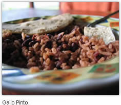
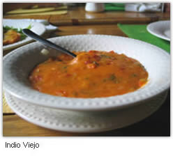
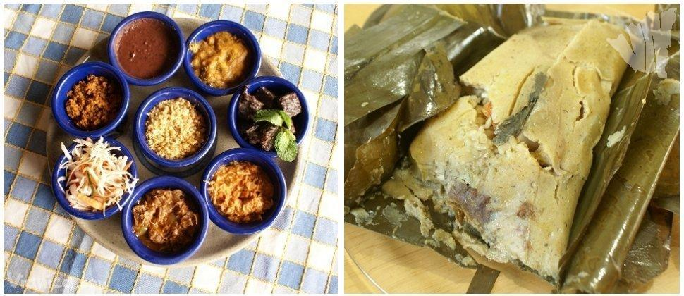
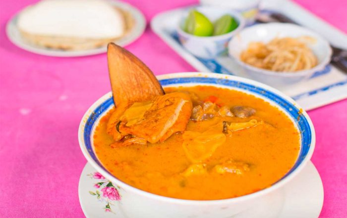
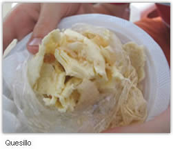
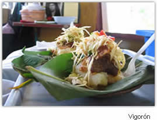

PLATO TIPICO NICARAGUENSE
blog de comida tipica
Favoritos:
  



NACATAMAL
17/01/2019
Nacatamales nicaragüenses envueltos en hojas de chagüite El nacatamal es un Tamal típico de Nicaragua, aunque también es muy popular en Honduras. Consiste en una masa a base de maíz, carne, verduras y arroz, entre otros, dividida en porciones que se cuecen envueltas en hojas de plátano o banano. Los nicaragüenses lo consumen los sábados y domingos, y en días festivos, como Navidad. Este plato nicaragüense es tradición en los pueblos: preparados caseros acompañados con café y pan por la mañana.
Escribe un comentario: